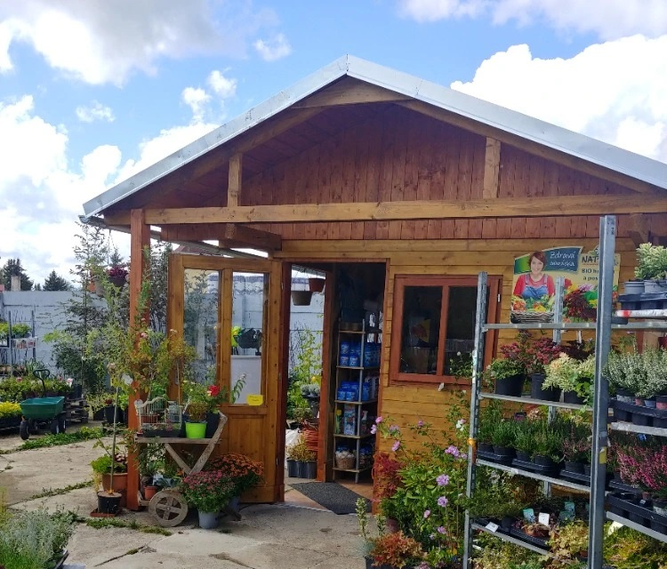

!!! Od 1.8.2024 nás naleznete na nové adrese Chebská 737/25, vedle lídlu směr Cheb !!!

Naše nabídka se mění podle sezóny
- letničky, trvalky, vřesy ...
- Drobné ovoce, ovocné keře
- Ovocné stromky
- Okrasné keře a stromky - listnaté i jehličnaté
- vánoční stromky
Dále nabízíme:
- Substráty, Travní semena, Hnojiva, Ochrannou chemii,
- Zavlažovací program STALCO GARDEN,
- Drobné zahrádkářské nářadí a potřeby
- Textilie a plachty